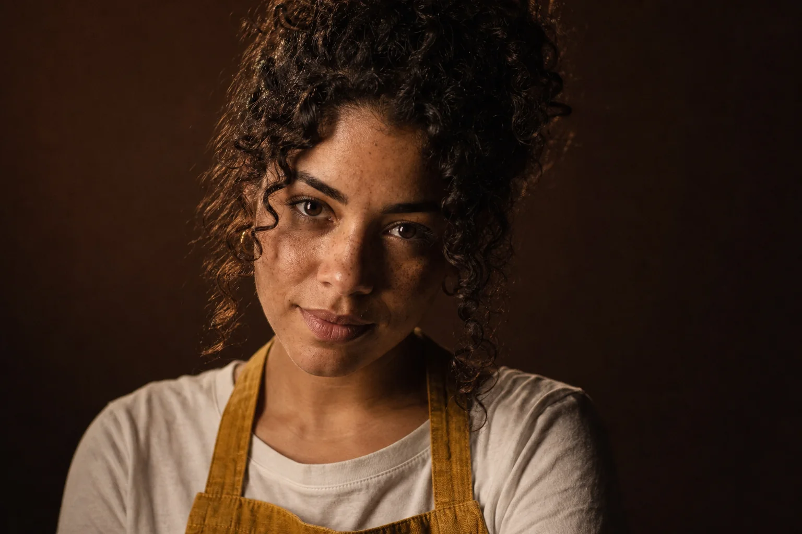

Prompting de Imagem
Pense como diretor de fotografia
Troque o “prompt sorte” por um briefing técnico: plano, lente, luz, textura, composição e estilo. Cada conceito vem com a imagem que ele produz e o prompt exato que a gerou.
O que você vai conseguir fazer

Como este curso ensina
Cada tópico segue o mesmo contrato: o conceito explicado em poucas linhas, a imagem que ele produz, o prompt exato logo abaixo e o que observar. Quando o assunto é “mude só uma coisa”, você vê a mesma cena editada — não duas imagens diferentes fingindo ser comparação.
No fim de cada módulo há uma prática guiada com prompt pronto para colar e uma lição de casa em dois níveis (básico e avançado) que alimenta o seu portfólio.
Você vai dirigir a identidade visual da Terra Alta Cafés, uma torrefação fictícia da Serra da Mantiqueira: retratos da barista Lia, fotos de produto do café e cenas do espaço. O mesmo cliente atravessa o curso inteiro, como num trabalho real.
O caminho do curso
🧭 Escolha sua ferramenta e prepare o projeto
Duas ou três ferramentas bem dominadas valem mais que dez
🎬 A fórmula do prompt
Plano + lente + luz + textura + composição + estilo
🎛️ Controles e testes dentro das ferramentas
Prompt → modelo → controles: ajuste o elo certo
🧑🎨 Personagem e campanha consistentes
Uma Lia, seis cenas, o mesmo rosto em todas
✂️ Edite sem perder o que já funciona
Mude só o que precisa — e prove que o resto ficou
🔍 Upscale, restauração e entrega
Mais pixels sem perder o rosto, o texto nem o prazo
🗂️ Projeto final: da intenção ao portfólio
Briefing, série coerente e case pronto para mostrar
Abrir materiais: prompts, fichas e rubrica
Todas as imagens de exemplo foram geradas para este curso com o GPT Image, da OpenAI — pela ferramenta de imagem do Codex e, em parte, pelo modelo GPT Image na Magnific. Abaixo de cada uma está o prompt exato que a produziu. Comparações do tipo “muda só X” foram feitas editando a mesma imagem-base, para que só a variável estudada mude. Pessoas, marcas e produtos são fictícios.
Seu progresso fica neste navegador. Use Minha jornada → Exportar para fazer backup.